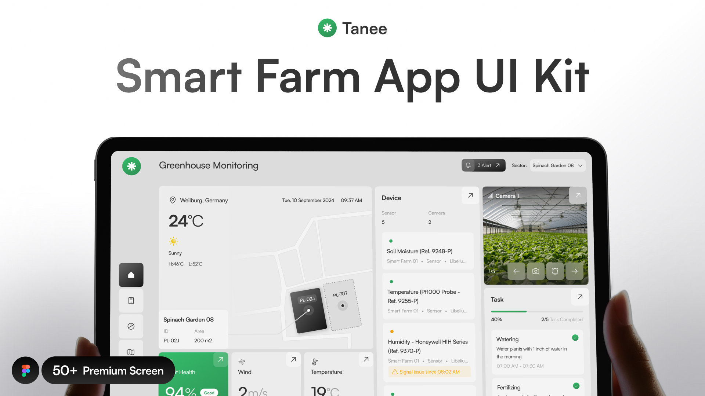
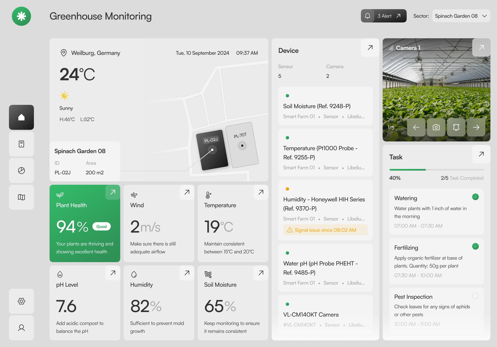
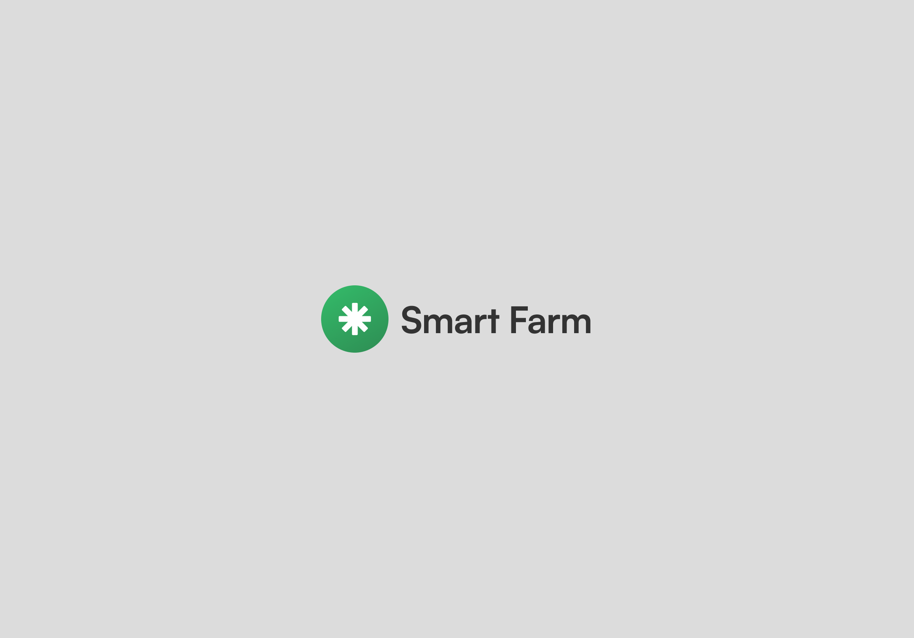
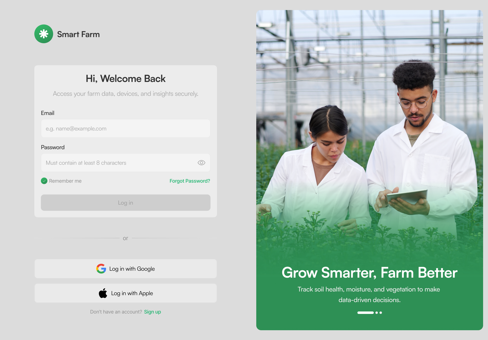
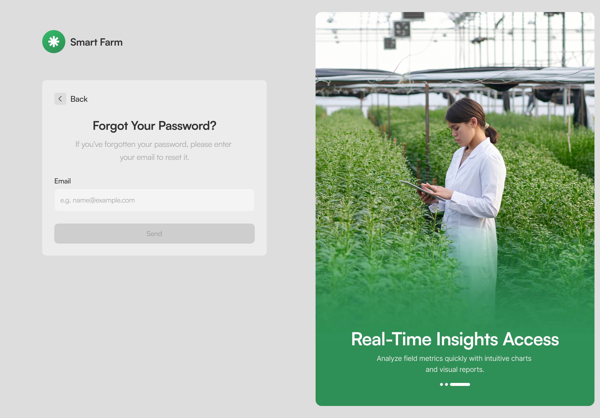
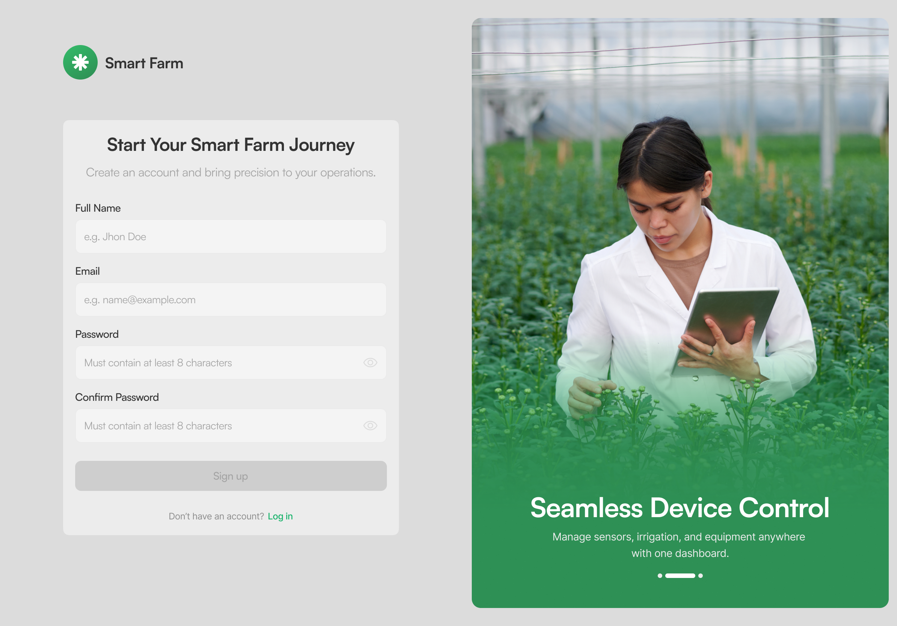

界面预览






素材目录
Tanee-Smart-Farming-UI-Kit.fig可编辑源文件 · 50.6 MB · Figma 导入即可编辑
svg/65 个矢量图标，按页面分目录
raw/12 张原始位图（图片填充）
json/design-page.jsonDesign 页完整节点树 · 124,675 字符
json/getting-started.jsonGetting Started 页节点树 · 27,249 字符
tokens/design-tokens.json颜色 / 字体 / 圆角 / 效果统计
README.md完整说明：目录、键名表、授权
关于可编辑源文件：根目录的 Tanee-Smart-Farming-UI-Kit.fig 就是完整的可编辑源文件。Figma → 文件 → 导入（或直接拖进 Figma 窗口）即可打开。
授权：允许个人/商业项目使用、修改、客户项目（署名可选）；禁止在其他平台转售或重新分发，禁止打包进付费 UI Kit / 素材市场。© 2025 Nija Works.